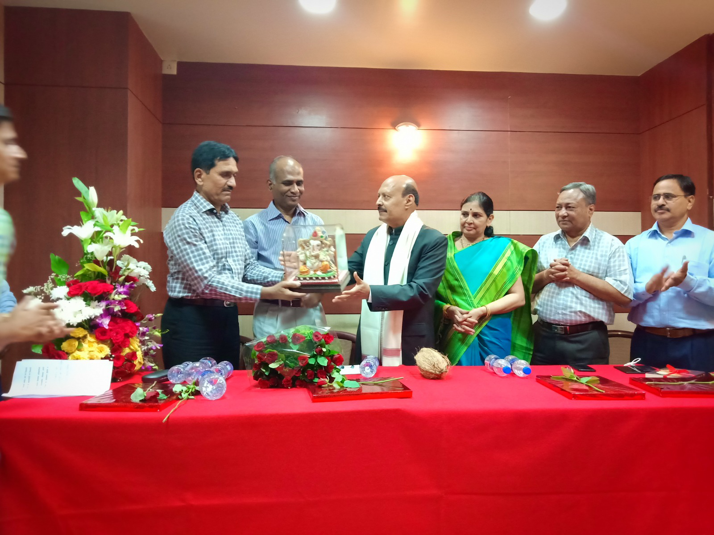
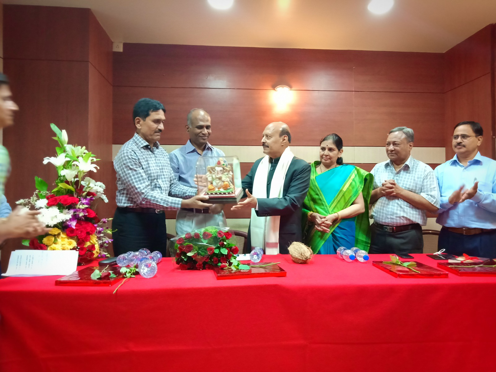

Tribute to Late Shri. Raveendra Jadhav
A Journey of Humble Beginnings, Unshakable Determination, and Inspiring Legacy
Late Shri Raveendra Jadhav was more than an exceptional officer ,he was a compassionate leader, a visionary, and a deeply devoted human being whose life continues to inspire and uplift generations.
With unwavering dedication to duty and a profound empathy for others, he stood as a symbol of integrity, courage, and justice. He wasn’t just a guardian of the law he was a beacon of hope for the vulnerable, a mentor to many, and a pillar of strength within the community.
What truly set him apart was his rare ability to balance firmness with kindness, earning him the admiration and respect of both his colleagues and the people he served.
Though he is no longer with us, his ideals live on guiding our actions, shaping our vision, and reminding us of the enduring power of compassion, leadership, and service. He was not just an officer. He was and will forever remain a force for good.


 
